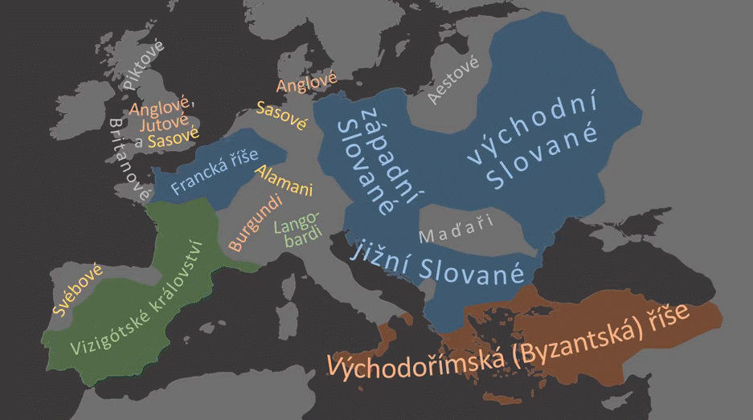

takto vyzerala európa pred sťahovaním ^
chceli sa sťahovať:
rím sa rozpadol, tak mali pekné územie na osídlenie
vyčerpávala sa im pôda
rástol počet obyvateľov
do európy vošli hunovia
veľmi silní
vraj jedli surové mäso a neumývali sa
ghóti sa presunuli ku čiernemu moru
od dnesteru naľavo vizigóti
ty boli veľmi bojovní
prešli od čierneho mora cez celú európu až do gálie a hispánie (francúzsko a španielsko)
cestou aj vyplienili rím
napravo ostrogóti
tych ale potom hunovia z východu zbili
vandali takisto išli dole do španielska
vizigóti ich vytlačili a prešli cez more na sever afriky a zobrali aj kartágo
hunovia išli do atén a na západ
malé množstvo ostrogótov išlo do rímu
anglovia a sasovia(amogus) isli do anglicka - piktov, čo boli na severe anglicka vytlačili na západ pevnozemskej európy a založili bretaň
burghundi išli niekam na pevnozemskú časť dnešného talianska ( trohu na západ od tiaľ, ale no tak)
rimania, vizigóti a frankovia sa proti hunom rozhodli zaútočiť
attila - vládca hunov - “bič boží”
dobrí vyhrali v bitke pri Katalúnskych poliach
vandali zobrali aj rím - odoaker prevzal korunu po romulovi augustovi - poslednom cisárovi - vtedy vlastne zanikol rím
frankovia → franská ríša
ostrogóti v ríme →ostrogótske kráľovstvo
langobardi →lombardia
avari prišli z východu, usadili sa na balkáne
slovania - ani veľmi nevieme odkiaľ prišli
sámova ríša
bruh oni vzali celý východ európy
 ← takto sa sťahovali (poďľa
textu by malo byť jasné ktorá šípka je ktorý národ)
← takto sa sťahovali (poďľa
textu by malo byť jasné ktorá šípka je ktorý národ)

európa po sťahovaní ^